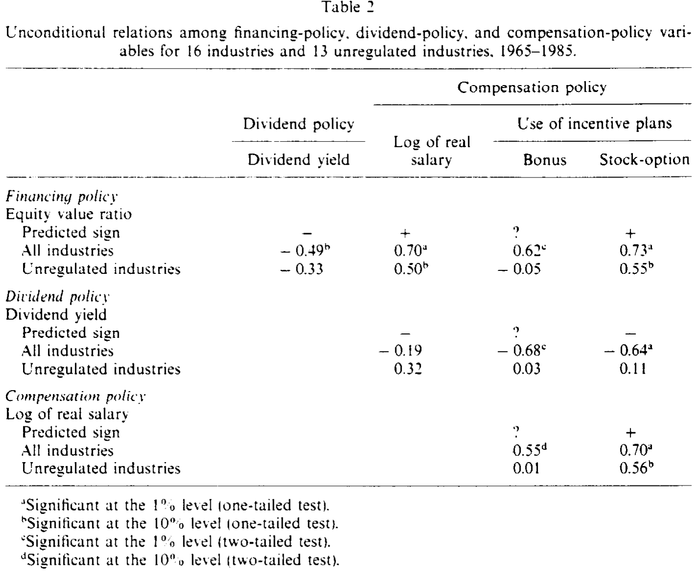
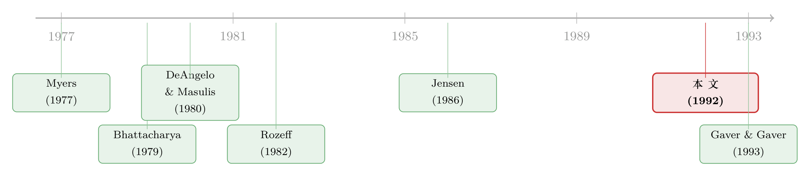

一把钥匙开五把锁：投资机会集如何串起公司的融资、分红与薪酬
本文读的是 Smith & Watts (1992, Journal of Financial Economics)：一家公司的融资、分红、高管薪酬这三件看似各管各的事，其实被同一个底层变量——「投资机会集」——悄悄拴在了一起。成长型公司用更少的债、发更低的股利、给经理更高的薪酬、更爱用股票期权；而能解释这套横截面差异的，是契约理论，不是税收，也不是信号。
1 三件事，为什么总是一起出现？
先抛一个问题。打开任意一家公司的年报，你会看到至少三组互不相干的决策：它的资本结构里有多少债、多少股本（融资政策）；它每年把多少现金以股利的形式还给股东（分红政策）；它给 CEO 开多少工资、要不要给期权（薪酬政策）。
按教科书的分工，这是三门课：资本结构理论管第一件，股利政策理论管第二件，高管激励理论管第三件。它们各有各的「祖师爷」，各有各的模型。可是，当 Smith 和 Watts 把一堆公司的这三组数字摊在同一张表上时，一个尴尬而迷人的事实冒了出来：这三件事并不是各走各的，它们一起动。 高杠杆的公司往往也高股利；高薪酬的公司往往也更爱用期权、却用更少的债。
于是，一个自然的问题是：是什么东西，能同时拨动这三根弦？
这篇 1992 年的论文，本质上就是在回答这个问题。而它的答案，简洁得近乎固执——投资机会集 (investment opportunity set)。
2 先解决一个方法论的麻烦：什么变量「有资格」做解释变量
在给答案之前，作者做了一件很「契约理论」的事：他先把一大半候选的解释变量给排除掉了。
他的逻辑是这样的。要解释公司政策的横截面差异（即「为什么 A 公司和 B 公司不一样」），你需要的解释变量必须本身就在公司间有差异。可很多东西其实是所有公司共享的：同样的契约技术（偿债基金、股利条款、可撤销租约、高管期权这些「工具」谁都能用）；同样的资本市场（任何风险偏好、任何个人税率的投资者，谁都能接触到）。
这一步推理是全文的「地基」。它直接判了两类理论的「死刑」：既然人人都能接触到各种税率的投资者，那么个人税就无法解释公司间的政策差异——因为股东的税率是内生的、可替换的。同理，风险偏好和契约技术也不行。
那什么东西真的在公司间有差异？作者给出三样：投资机会集（因为公司一旦投资于专用的物质资本和人力资本，它们未来的投资机会和回报分布就被锁死了，彼此不同）、管制、以及公司税。这三样，才是「有资格」上场的解释变量。
注意作者的诚实：他承认这些变量也有内生的成分（管制和税收都是政治过程的产物）。但他强调，统计上他只需要这些因素是预定的 (predetermined)，而不需要它们完全外生。这是一个克制而务实的让步。
3 识别策略：把「成长机会」翻译成一个可测的比率
真正关键的一步，在于如何度量「投资机会集」。它本身看不见摸不着——你没法直接观测一家公司「未来有多少正净现值的项目」。
作者的办法是用一个代理变量：账面资产与公司价值之比 (assets-to-value ratio, A/V)。直觉是，公司价值可以拆成两块——「已落地的资产 (assets in place)」加上「成长期权 (growth options)」。账面资产 \(A\) 衡量前者，于是 \(A/V\) 越高，意味着已落地资产占比越大、成长机会占比越小。换句话说，\(A/V\) 是「成长性」的反向刻度。
公司价值 \(V\) 这样构造（市值股本 + 账面资产 − 账面股本）：
$$ V_{jt} = E_{jt} + A_{jt} - BE_{jt} $$
被解释的三组政策也各自落成可测的数字。融资政策用股本与价值之比 (equity-to-value, E/V)；分红政策用股利收益率 (dividend yield, D/P)；薪酬政策用 CEO 实际工资中位数的对数。薪酬回归里还额外塞进一个会计回报率（因为业绩本就会影响薪酬）：
$$ R_{jt} = \frac{OI_{jt} + INT_{jt}}{V_{j,t-1}} $$
这里有一处经常被忽视的细节。作者用的不是公司层面数据，而是行业层面数据——因为他依赖的高管薪酬来自 Conference Board 的行业调查（Fox 历年汇编）。他先按 Fox 的行业口径，从 Compustat 里挑出规模匹配的公司，逐年算出各行业的投资机会、融资、分红变量，再把个体公司按行业平均。好处是降低测量误差、并保留变量间的离散度；代价是，「投资机会集」这个本就充满测量误差的变量，又多了一层行业聚合。作者对此很坦白，并在附录里用别的代理变量做了敏感性分析。
4 数据
- 数据来源：高管薪酬与激励计划使用频率来自 Conference Board 调查（Fox 1966–1986 汇编）；融资、分红、投资机会变量从
Compustat估算。 - 观测单位：行业-年 (industry-year)。
- 样本期：1965 到 1985，每隔四年取一次，即 1965、1969、1973、1977、1981、1985 共六个时点。
- 样本量：
E/V与D/P回归各93个观测（1965 年缺保险与银行业）；三个薪酬回归各91个观测（建筑业在 1965、1969、1973 缺失）。 - 行业划分：共 16 个行业，其中保险、燃气电力公用事业、银行被视为「受管制」（用一个截距哑变量），其余 13 个为「不受管制」。
计量上，作者把横截面与时间序列混合 (pool) 起来回归，并强调由于背后是一个联立方程系统，估出来的是约简式 (reduced form) 参数，而非结构参数。标准误用 White (1980) 的异方差稳健估计——有意思的是，White 标准误通常比 OLS 更小，所以系数的显著性反而更强。
5 主线：Myers 的「underinvestment」如何成为整篇文章的支点
到这里，论文的真正核心终于浮出水面。为什么成长型公司应该少借债？答案来自 Myers (1977)。
Myers 把公司未来的投资机会看成一组看涨期权：它们值不值钱，取决于管理层将来会不会去行权（即去投这些项目）。问题在于，如果公司已经发行了有风险的债，那么一旦行权去做一个正净现值的项目，项目现金流要先还给债主（债主有优先求偿权），于是部分价值被债主拿走、股东反而可能受损。结果，股东就有动机放弃这些本该做的好项目——这就是著名的投资不足问题 (underinvestment problem)，它会侵蚀公司价值。
怎么治？一个办法是：用股本而非债去为成长期权融资。于是 Myers 给出预测：成长期权占公司价值的比例越大（即 \(A/V\) 越低），公司杠杆越低、\(E/V\) 越高。
这条逻辑就是整篇论文的支点。一旦你接受「成长机会会被债的代理冲突所侵蚀」，那么： - 成长公司少借债（融资）； - 成长公司现金流少、且要把钱留给项目，所以少分红（分红，Jensen 1986 的自由现金流逻辑在此呼应，详见《现金为什么一定要「还」出去？》）； - 成长公司更依赖「会做决策的人」而非「会监督的人」，且这种人更稀缺、更难监督，所以要给更高的薪酬、更多的股票期权（薪酬）。
一根线，串起了三件事。这就是为什么它们会「一起动」。
（关于成长机会如何压低债务、又如何被债务期限「化解」，可一并参见《把『成长机会』拧成一个旋钮》与《短债能不能「治好」成长型公司不敢借钱的病？》。）
6 主要结果：契约理论赢了，税收和信号输了
论文的妙处在于，它把三套理论——契约、税收、信号——对同一个系数的符号做出了相反的预测，于是数据可以「二选一」地把其中一方否决掉。
以融资政策为例。契约论说：成长越多、\(A/V\) 越低 → \(E/V\) 越高（即 \(E/V\) 与 \(A/V\) 负相关）。但信号理论（Ross 1977：发债是高质量的信号）却预测成长型、信息不对称大的公司应该多借债，即 \(E/V\) 与 \(A/V\) 正相关。两者符号相反。
实证结果是：
- 融资 (E/V)：\(A/V\)、管制、公司规模的系数全部可靠为负，回归在
0.001水平显著。这与契约论一致，与信号论矛盾。\(E/V\) 对规模为负，也符合「财务困境成本限制杠杆、大公司更分散因而能扛更多债」的逻辑。 - 分红 (D/P)：管制与 \(A/V\) 的系数都可靠为正——成长少（\(A/V\) 高）的公司分更多股利，受管制的公司也分更多（Smith 1986 的「逼公用事业更频繁去资本市场」逻辑）。规模系数也可靠为正。这同样支持契约论、否决信号论。
- 薪酬：成长机会越多，CEO 薪酬越高；管制降低薪酬；规模提高薪酬；会计回报与薪酬正相关（Murphy 1985）。
- 激励计划：成长型公司更频繁使用股票期权计划；受管制公司更少用期权和奖金计划。
把这些「政策对外生变量」的关系翻译过来，就得到了政策与政策之间的关联：杠杆与股利正相关、薪酬与（奖金和期权）正相关；而杠杆与薪酬负相关、奖金与期权之间、以及股利与（奖金、期权）之间则为负相关。

Table 2
这张关联表（如表 2 所示）正是「三件事一起动」的直接画像：它不是某一对变量的孤立相关，而是同一个投资机会集在背后同时拨动多根弦留下的「指纹」。也正因如此，作者特意强调——只看单一政策（比如只研究资本结构）极易得到伪相关 (spurious correlation)；只有把三组政策放在一起看，才能互相控制掉这种干扰。
7 文献脉络
这条研究线，是公司金融从「各自为政」走向「统一框架」的一个缩影。
最早，资本结构、股利、薪酬是三条平行的河。Myers (1977) 把投资机会写成期权、点出了债的「投资不足」代理成本，这是第一块基石。几乎同时，Ross (1977) 从信号角度给出相反的杠杆预测，构成了一个干净的对立假设。股利那边，Bhattacharya (1979) 提出股利信号模型，而 Rozeff (1982) 与 Easterbrook (1981) 则从代理成本角度解释股利——成长少的公司更需要靠「频繁去新股市场」来接受监督。税收这条支线上，DeAngelo & Masulis (1980) 论证了非债务税盾对资本结构的影响。

Jensen (1986) 的自由现金流理论，把「成长少 → 现金多 → 需要用债和股利来约束」这条逻辑推到了高潮。而 Smith & Watts (1992)，也就是本文，做的正是把上述这些散落的预测汇到一张回归表上对质，让它们就同一组系数的符号正面交锋——结果契约论几乎全面胜出。其后，Gaver & Gaver (1993) 用公司层面数据、以「成长股基金持股频率」度量成长机会，给出了独立的确认。
值得一提的是，本文与 Titman & Wessels (1988) 形成了方法论上的对照：后者对变量间关系施加了复杂的结构；本文则刻意只估约简式、先求稳健的相关，把「拆分成分效应」的雄心留给将来。在「管理层自利能否解释杠杆」这个相邻问题上，也可参见《老板不想借钱，债却替他保住了位子》。
8 评论与延伸（Q&A + 研究方向）
(a) 几个可能的疑问
Q：用 \(A/V\)（账面资产/公司价值）当「成长机会」的代理，会不会本身就有问题？
会，作者也承认。账面价值是历史成本减折旧，对长寿命资产的公司测量误差很大；而且 \(A/V\) 的分母里有市值 \(V\)，市值本身又内含成长预期，存在机械关联的隐忧。作者的对冲办法是用多个替代代理、用工具变量、并在附录做敏感性分析。但「成长机会难以干净度量」始终是这条文献的阿喀琉斯之踵。
Q：为什么说这篇文章「否决」了税收理论，而不是税收不重要？
关键在于横截面。作者的论证是：个人税率因股东可自由选择而内生，故个人税无法解释公司间差异；而像 DeAngelo-Masulis 的非债务税盾这类公司税效应，虽能影响融资，却对 \(E/V\) 给出了与数据相反的符号预测。所以是「在解释横截面差异这件事上，税收输给了契约」，不是说税收在别处不起作用。
Q：行业层面数据，会不会把真正的公司间差异给「平均」掉了？
这是最实在的担忧。聚合确实会损失公司内部的离散度，也可能把行业固定效应误当成投资机会效应。作者辩称行业（SIC 分类）恰好能按「投资机会的性质」把公司分组，因而聚合反而降噪。但这个辩护成立与否，取决于「同行业=同投资机会集」这个假设有多硬——这正是后来 Gaver & Gaver (1993) 改用公司层面数据的动机。
Q：估出来的是约简式系数，那能说明「因果」吗？
严格说不能。作者非常克制地反复强调，背后是一个联立系统，融资、分红、薪酬彼此可能内生影响，他估的是约简式、不是结构参数。所以本文的定位是「记录稳健的经验关系」，而非识别因果机制。这种「先把事实钉牢、再谈机制」的姿态，恰恰是它的诚实之处。
Q：契约论同时解释了三件事，会不会是「什么都能解释，所以什么都没证伪」？
不全是。本文的可证伪性来自一个巧妙设计：契约、税收、信号对同一个系数的符号给出相反预测，数据一旦定下符号，就至少否决了一方。真正软的地方在于，当多个偏效应叠加、净效应却只估出一个符号时，作者无法分离次要的偏效应——他对此也直言不讳。
Q：管制为什么会同时压低杠杆…不，是抬高杠杆、又压低薪酬？
管制的逻辑和成长机会其实是「同向叠加」的：管制限制了管理层对项目的自由裁量，等于替债主控制了代理冲突，所以受管制公司可以承受更高杠杆（更低 \(E/V\)）；同时管制压缩了决策者的边际产出，故薪酬更低、也更少用期权与奖金。一个变量、多条传导，结果在表里指向高度一致。
(b) 几个可能的研究问题与提案
1. 把同一套框架搬到公司债的「契约设计」上
【经济故事】本文证明成长机会决定「借多少债」，但 Myers 的投资不足逻辑其实更直接地预言「借什么样的债」——成长型公司应更依赖短债、可赎回条款、宽松的股利契约来缓解代理冲突。【可行性】中。需要债券契约层面的微观数据（如 Mergent FISD 的条款字段）配上成长代理；识别上仍受「成长机会内生」之困，可借行业技术冲击做准外生变动。
2. 外资持有人会不会「读懂」投资机会集，从而改变这套政策组合？
【经济故事】若外资机构更倾向于监督、且偏好治理透明的成长型公司，那么外资进入可能系统性地改变目标公司的融资-分红-薪酬组合。这把本文的「内生政策束」接到了所有权结构这条暗线上。【可行性】中。可用各国可投资度 (investability) 的改革作为外资准入的准自然实验；难点是要把外资效应与同期治理改革分离。
3. 用本文的「政策束」视角重估资本结构之谜
【经济故事】既然融资、分红、薪酬是同一个投资机会集的三个投影，那么单独研究杠杆必然遗漏变量。一个想法是：在控制住分红与薪酬政策后，成长机会对杠杆的「净」解释力还剩多少？这能检验本文「单一政策易致伪相关」的论断到底有多重要。【可行性】高。Compustat + ExecuComp 即可构建公司层面三政策面板，方法成熟，主要工作量在变量构造与稳健性。
4. 信用市场里的「投资机会—流动性」连接
【经济故事】成长型公司债少、但单只债的流动性可能更差（信息不对称大、投资者基础窄）。投资机会集是否同时压低了债务数量与债务流动性？这把本文的资本结构含义延伸到了二级市场。【可行性】中。需要 TRACE 层面的公司债成交数据配成长代理；识别要小心规模与评级的混淆。
参考文献
- Bhattacharya, S. (1979). Imperfect information, dividend policy, and 'the bird-in-the-hand' fallacy. Bell Journal of Economics 10, 259–270.
- DeAngelo, H. and R. Masulis (1980). Optimal capital structure under corporate and personal taxation. Journal of Financial Economics 8, 3–29.
- Easterbrook, F. H. (1981). Two agency-cost explanations of dividends. American Economic Review 74, 650–659.
- Gaver, J. J. and K. M. Gaver (1993). Additional evidence on the association between the investment opportunity set and corporate financing, dividend, and compensation policies. Journal of Accounting and Economics 16, 125–160.
- Jensen, M. C. (1986). Agency costs of free cash flow, corporate finance, and takeovers. American Economic Review 76, 323–329.
- Murphy, K. J. (1985). Corporate performance and managerial remuneration. Journal of Accounting and Economics 7, 11–42.
- Myers, S. (1977). Determinants of corporate borrowing. Journal of Financial Economics 5, 147–175.
- Ross, S. (1977). The determination of financial structure: The incentive-signalling approach. Bell Journal of Economics 8, 23–40.
- Rozeff, M. S. (1982). Growth, beta and agency costs as determinants of dividend payout ratios. Journal of Financial Research 5, 249–259.
- Smith, C. W., Jr. and R. L. Watts (1992). The investment opportunity set and corporate financing, dividend, and compensation policies. Journal of Financial Economics 32, 263–292.
- Titman, S. and R. Wessels (1988). The determinants of capital structure choice. Journal of Finance 43, 1–19.
- White, H. (1980). A heteroskedasticity-consistent covariance matrix estimator and a direct test for heteroskedasticity. Econometrica 48, 817–838.